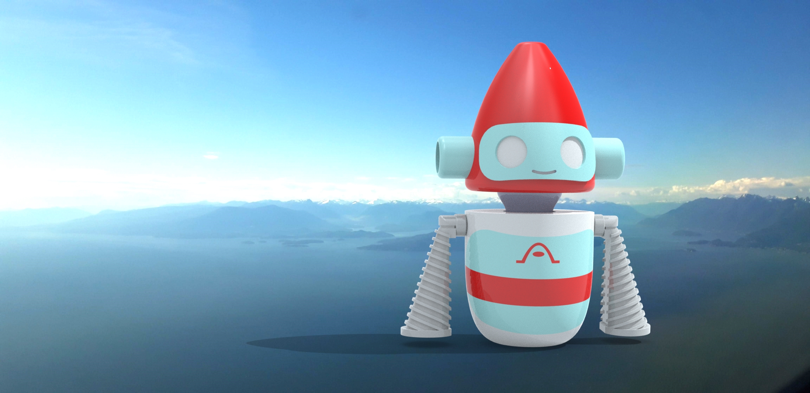
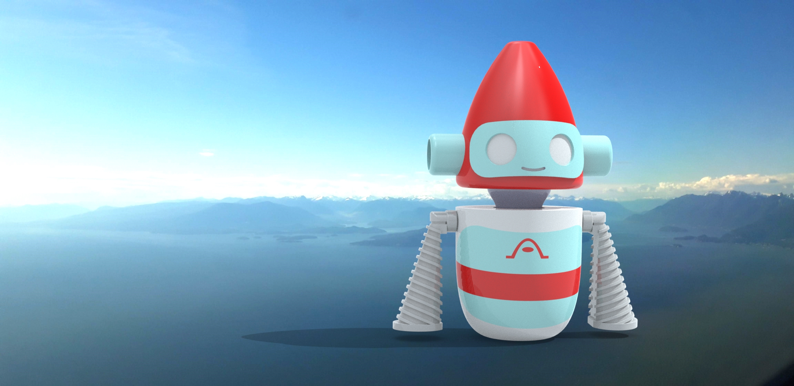
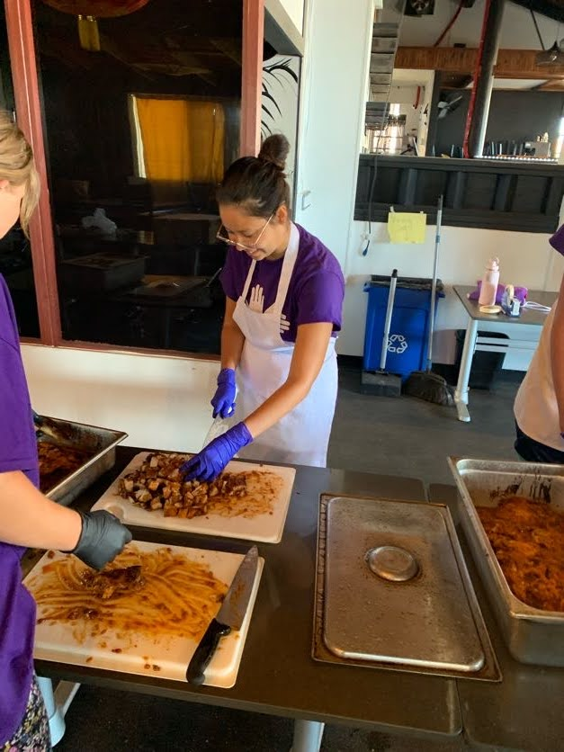
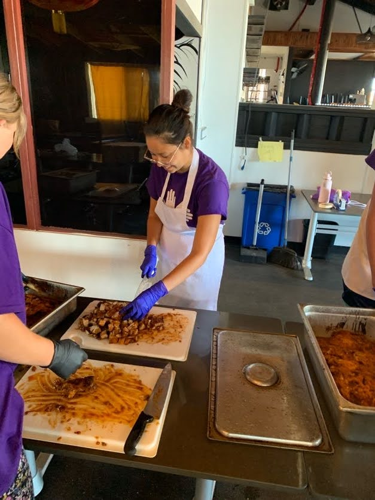

I live on Maui. I moved here when I was 5 years old, then I left for university when I was 17, and I moved back home recently in November.
I am moving to Oahu in about a week.
One of my goals that I would like to accomplish during my lifetime is to create a project, company, or organization that gives back to my community and helps with the process of diversifying our local economy beyond tourism.
My "Why" in enrolling in this bootcamp is to be able to use the knowledge and skills I gain to help local nonprofits and my community in general.
The strategies I aim to use to stay committed and motivated is to keep an organized, consistent, and well-balanced schedule, to work on the bulk of the focus work in the early mornings when my mind is most sharp, and to set personal goals for myself in terms of what I want to learn in depth and build.


 



 
